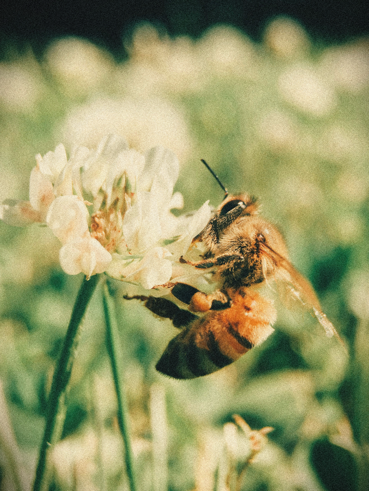
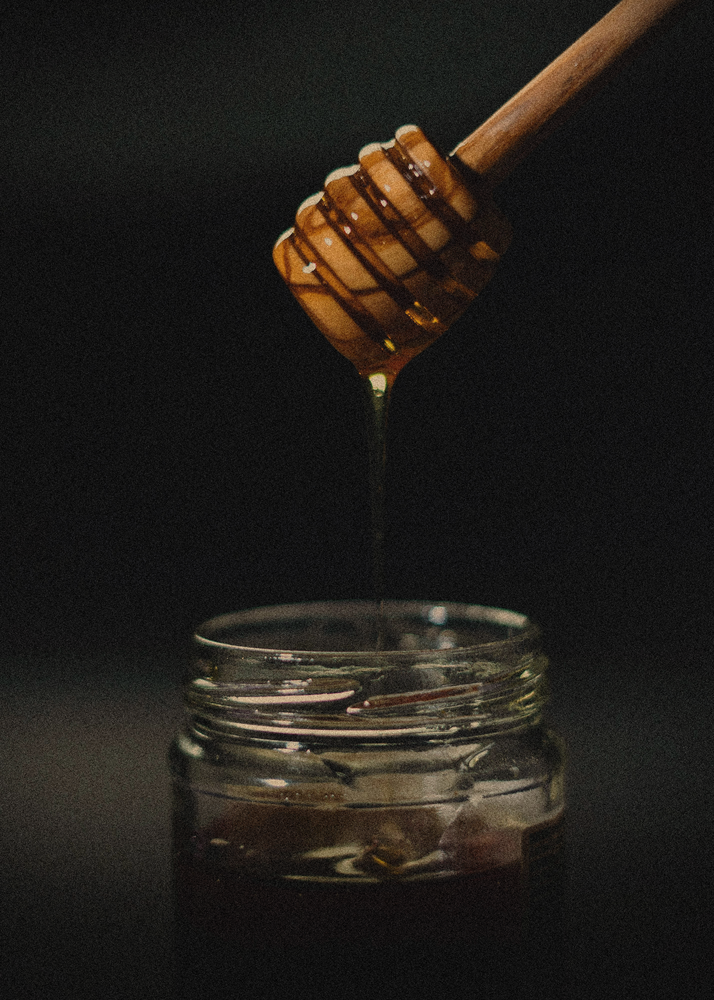

4 min read
Why Raw Honey Is Thicker and Richer
Where its thickness, crystallisation, and rich taste come from, and why supermarket honey often looks different.
Crystallisation Is Not a Flaw
When honey becomes paler, turns cloudy, or begins to set, nothing unusual is happening inside the jar. Glucose naturally separates from water and forms small crystals, while the speed of the process depends on the floral origin, temperature, and balance of natural sugars. This is common in our raw and unfiltered honey and does not mean it has spoiled. In fact, honey that has not been strongly heated or overly filtered often shows this natural change more readily.
Water and Thickness
Bees bring in nectar that contains a great deal of water, then gradually dry it in the honeycomb until it ripens. If honey is removed too early, it contains more moisture, is runnier, and ferments more easily. Well-ripened honey usually contains around 17 to 18 percent moisture, although the exact amount depends on the harvest. That is why mature honey flows slowly, stays on the spoon, and creates a full, creamy texture in the mouth. Its thickness is not a packaging trick, but the result of the time the bees spent finishing the honey in the hive.
Crystallisation is not a flaw. It is proof that nothing has been removed.
Pollen, Enzymes, and Character
Unfiltered honey contains small amounts of pollen, natural enzymes, and tiny particles from the plants visited by the bees. They do not make the honey dirty; they are part of its origin and help each harvest develop a recognisable aroma, colour, and taste. Around Kalanjevo, on the slopes of Serta, the floral composition changes with the season, so one jar may be lighter and gentler while another is darker and deeper. Compare the Metche jars and choose a meadow, mountain, or mixed-flower taste.
What Strong Processing Removes
Fine filtration and high-temperature heating help honey remain clear, liquid, and visually identical from jar to jar for a long time. That appearance is practical for large shops, but processing may remove some of the natural aroma, enzyme activity, and character of a particular harvest. Our aim is not for every jar to look exactly the same, but to keep as much as possible of the honey that came from the comb. That is why we accept differences in colour, thickness, and crystallisation as nature’s signature, not a mistake.
Not Sure Which Honey to Choose?
Answer three short questions and we will recommend a honey based on your taste.
Start